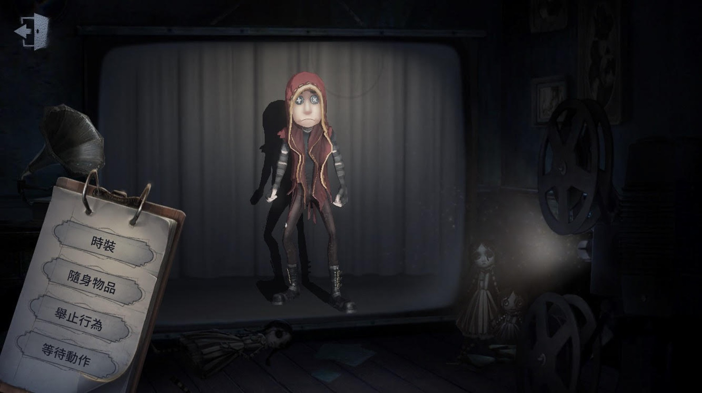

傭兵

【人物介紹】
名字：奈布‧薩貝達
奈布曾經是一名效力於東印度公司的廓爾喀雇傭兵，像大部分的廓爾喀人一樣，他個子不高，體格也不壯碩。但所有人都知道一個廓爾喀戰士就意味著紀律嚴明和英勇善戰。作為一個退休的雇傭兵，奈布·薩貝達已經習慣了嗜血的生活，也許一場危險的遊戲能給予他在戰場上同樣的體驗？
【能力介紹】
鋼鐵衝刺： 隨身攜帶鋼鐵護肘，讓他在跑過牆壁時可以按動牆壁並獲得一個方向上的衝刺加速。專業技巧讓傭兵對鋼鐵護肘的損耗降低，可以使用更多次數。
久經訓練：身手敏捷，板窗交互速度提升10%。
堅強：戰場磨煉了傭兵的意志，在狂歡之椅上的堅持時間增加30%。同時每次恐懼值增加均會延遲15秒生效，直到恐懼值超過上限才會倒地（即受傷狀態下，受到一次普攻不會倒地，15秒後倒地；受傷狀態下受到兩次普攻才會倒地）
戰爭後遺症：戰爭陰影導致破譯速度降低25%；每次受傷均會牽動舊疾，治療所需時間增加20%，最多疊加到100%。
初始道具為鋼鐵護肘，可以向前衝刺，若角度抓得好可以彈很遠，常常鬼剛打到第一下就發現傭兵已經彈得不見人影了，是逃生能力優秀的角色。